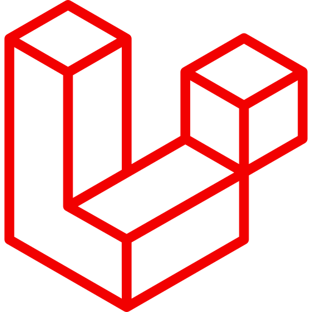

Laravel
PHP
Tecnico Superior en Informática Industrial de la Fundación Infocal y estudiante de la UMSS de octavo semestre. Durante mi formación adquirí experiencia en el desarrollo web utilizando Laravel, Spring Boot y Golang aplicando arquitecturas modernas como API Rest. Me considero una persona proactiva y comprometida con habilidades tanto en programacion como en la resolucion de problemas.
Tecnologias que utilice en algunos proyectos, algunas con mayor dominion que otras. Siempre intentado aprender mas al respecto
Experiencia en desarrollo de APIs y logica de negocio con herramientas orientadas a aplicaciones web.
